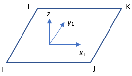
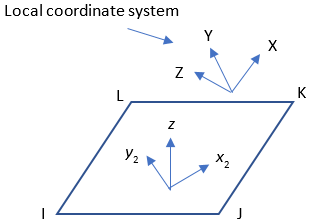
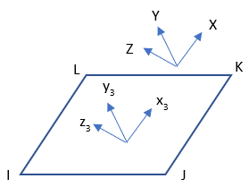
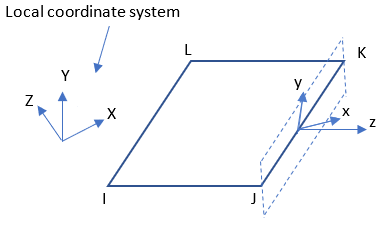

SFCONTROL, KCSYS,
LCOMP, VAL1,
VAL2, VAL3,
KTAPER, KUSE,
KAREA, KPROJ
Defines structural surface-load properties on selected
elements and nodes for subsequent loading commands.
-
KCSYS Specifies how the load direction is determined:
0 (or blank) – Use the coordinate system of an element face. A local coordinate system is projected onto the face, if defined ( VAL1) (default).1 – Use a local coordinate system. A local coordinate system must be defined and it is not projected onto the face. 2 – Use a custom (user-defined) vector in the global Cartesian coordinate system. -
LCOMP Load-component definition when
KCSYS= 0 or 1. The following table shows how the component (or primary direction) is determined based on the coordinate system:LCOMP Direction KCSYS = 0 KCSYS = 1 [4] VAL1 = 0 VAL1 > 10 [3] -- 0
1
2
Normal
x direction [1]
y direction [1]
Normal
x direction [2]
y direction [2]
x direction
y direction
z direction
The positive x and y directions are determined by the default surface coordinate directions. (See Figure 15: Coordinate System for Load Application on the Faces of 3-D Solid and Shell Elements.
The positive x and y directions are determined by the user-defined local coordinate system.
The local coordinate system is not projected onto the element face.
-
VAL1, VAL2, VAL3 KCSYS= 0 or 1:VAL1is the ID of the local coordinate system for the load.VAL2andVAL3are ignored.KCSYS= 2: The X, Y, and Z components of the direction vector in the global Cartesian coordinate system.-
KTAPER Global tapered load behavior (valid for SFE only):
0 – Load does not vary (default). 1 – Load varies with respect to the current element locations. The magnitude changes with respect to the element deformation. 2 – Load varies with respect to the initial element locations. The load magnitude for each element remains constant throughout the solution. . For more information, see "Global Tapered Load Behavior (
KTAPER)".-
KUSE Load direction with respect to the surface normal of the selected face:
0 – Use the load as calculated (default). 1 – Use a positive load only (negative set to zero, valid for LCOMP= 0 andKCSYS= 0).2 – Use a negative load only (positive set to zero, valid for LComp= 0 andKCSYS= 0).3 – Applied load is not used if the surface normal is oriented in the same general direction as the user-defined vector. Valid for KCSYS= 2 only.-
KAREA Loaded area during large deformation:
0 – Use the current (deformed) area (default). 1 – Use the initial area. -
KPROJ Vector-oriented load (
KCSYS= 2) behavior:0 – Apply the load on the full area and include the tangential component (default). 1 – Apply the load on the projected area and include the tangential component. 2 – Apply the load on the projected area and exclude the tangential component.
Notes
SFCONTROL defines the properties of distributed loads for all subsequent SF or SFE loading commands. (SFA and SFL are not supported.)
The command does not support cyclic symmetry analysis and analyses in which remeshing occurs (such as nonlinear mesh adaptivity, 2-D to 3-D analysis, and fracture analysis).
To update a load property or properties, reissue SFCONTROL with the new option(s) before issuing further SF or SFE commands.
|
SFCONTROL supports these structural solid, shell, and coupled-field elements: SHELL181, PLANE182, PLANE183, SOLID185, SOLID186, SOLID187, SOLSH190, SHELL208, SHELL209, SHELL281, SOLID285, PLANE222, PLANE223, SOLID226, and SOLID227. |
To list the current set of control data, issue SFCONTROL,STAT.
To reset all input values to defaults, issue SFCONTROL,NONE.
When KCSYS = 0, the positive normal load
acts in the negative surface normal (-z) direction. The positive
tangential loads act in the positive coordinate direction. A user-defined coordinate system
(VAL1) is ignored if the load is applied on an edge of a plane
element (PLANE182, PLANE183,
SHELL208, SHELL209,
PLANE222, and PLANE223).
When KCSYS = 1, the loading direction
follows the positive direction of the local coordinate system. The ID of a local coordinate
system (VAL1) is required.
The following figure shows how the coordinate directions are
determined on a face of a solid or shell element with different
KCSYS and VAL1 input:
Figure 15: Coordinate System for Load Application on the Faces of 3-D Solid and Shell Elements
KCSYS = 0 |
KCSYS = 1 | |
VAL1 = 0 |
 | – |
VAL1 > 10 |
 |
 |
| where: |
| z, x1, y1 : normal and tangential directions (default surface coordinate system) |
| z, x2, y2 : normal and user-defined tangential directions (user-defined surface coordinate system) |
x3, y3, z3 : x,
y, and z directions defined by the local coordinate system when
KCSYS = 1 |
When KCSYS = 0, two
coordinate systems can define the direction of the surface loads. The default direction of the
first tangential axis (x1) is determined by the local connectivity
(I-J) of a face. For example, the first tangential axis (x1) is given
by a unit vector directed from node J to node I on the first face (J-I-L-K) of an 8-node solid
element. The second tangential direction is the cross product of the two vectors
(). This default surface coordinate system rotates with element deformation
(that is, z remains normal to the face and x1 is determined at current
nodal locations). For a user-defined surface coordinate system
(VAL1 > 10), the direction of the first tangential axes
(x2) is determined by the projection of the local coordinate system
onto the face. The tangential directions rotate if the direction of the face normal (z)
changes in the space. If the direction of the face normal (z) is fixed (for in-plane rotation,
for example), the tangential axes do not follow element deformation.
When KCSYS = 1, the positive direction of
the x3, y3, and z3 axes
follow the direction of the local coordinate system without adjustment. Therefore, they do not
follow element deformation.
When KCSYS = 2, the loading direction
follows the positive direction of the orientation vector, defined via
VAL1, VAL2, and
VAL3. The direction is calculated as , where , , and are unit vectors in the global Cartesian coordinate system. The loading
direction is fixed and does not follow the deformation of a face of a selected element. You
can adjust the load magnitude (KUSE and
KPROJ).
The following figure shows the default direction of the normal (z) and tangential (x) components on an edge of a 3-D shell element (SHELL181 or SHELL281):
If a local coordinate system is defined and KCSYS = 0 for the
edge of the 3-D shell element, the tangential directions are adjusted in the plane of the
edge:
Figure 17: Projected Coordinate System of Surface Load on the Edge of a 3-D Shell Element

The following figure shows the positive direction of the loads on the edge of a plane
element when KCSYS = 0. The positive direction of the tangential
load is defined by the definition of the faces (J-I, K-J, L-K, I-L).
If KCSYS = 1 or 2, the load direction does not change and
KUSE = 1 or 2 is ignored.
If KCSYS = 1 or 2, or KTAPER > 0,
you cannot specify a gradient (slope) for surface loads (SFGRAD) or a
varying surface load (SFFUN).
This command is also valid in the PREP7 processor.
Global Tapered Load Behavior (KTAPER)
If KTAPER = 1, the magnitude of the load is determined by the
current location of a point:
| where: |
 : Values on SFE ( : Values on SFE (VAL1 ~
VAL4) |
| : Global Cartesian coordinates at the current location of the point. |
If KTAPER = 2, the magnitude of the load is determined by the
initial location of a point:
| where: |
: Values on SFE (VAL1 ~
VAL4) |
| : Global Cartesian coordinates at the initial location of the point. |
KTAPER is not valid for use with SF.
Load-Stiffness Effects
Load-stiffness effects are included in the supported elements for the real part of
normal load (KCSYS = 0, LCOMP = 0,
KTAPER = 0 or 1) at the current configuration. All other load
properties are included in the load vector of the elements.
You can specify an unsymmetric matrix (NROPT,UNSYM) for the load-stiffness effects if needed.